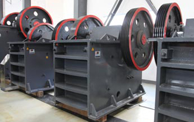

Stone Crusher Machine
2015-01-28
Crusher machine could be the exclusive compound content of contaminants bigger than 3 mm in the total emission rate 50% or perhaps a great deal of crusher machine. Procedures regularly broken by feeding and nesting into coarse grain size the damaged, the broken and petty. Gravel equipment normally used jaw crusher, jaw crusher, effect crusher, influence crusher, compound crusher, single-se hammer crusher, vertical crusher, gyratory crusher, cone crusher machine, roll crusher, double roll crusher, combo breaker, a molding machine damaged many.
Jaw Crusher jaw plate on employing two materials extrusion and bending and breaking a myriad of coarse damaged or hardness from the material within the crusher machine. The broken physique within the fixed jaw plate and movable jaw plates, jaw plates near to the time after the two materials Jibei broken jaw plate away once the two nesting human population is below block in the foot of your released material. It really is crusher action is completed sometimes. This crusher as a result of very simple structure, dependable and may be broken advanes of difficult supplies are broadly utilized in mineral processing, building supplies, silicate and ceramics industries.
80 to twenty in the twentieth century, 800 a whole lot of material each and every hour, breaking a sizable jaw crusher to some particle size has arrived at roughly 1,800 mm. Typically used jaw crusher with elbow board and two single brackets. The previous moving jaw at the workplace merely a uncomplicated swing arc, so recognized as basic swing jaw crusher the second for that swing arc to maneuver up and reduce also, so recognized as complicated swing jaw crusher. Jaw Crusher broadly utilized in mining, smelting, constructing material, highway, railway, water conservancy and chemical market in addition to other industries, breaking strength a maximum of 320 MPa of numerous materials.
Single-plate jaw broken elbow mobile jaw plate up and lower movement to advertise the function of nesting, and it is degree of travel is greater than best with the location with the reduce a part of bulk materials very easily damaged, therefore the broken more than the elbow plate efficiency. The lag is the reality that jaw plate put on more rapidly, and also the materials occur to be damaging the spontaneous rise in energy consumption. To be able to safeguard the key places with the device is not broken due to overload, and often the kind in the small size the brackets designed for weak hyperlinks, overload the device if this very first deformation or fracture.
Moreover, to satisfy the demands of a variety of marker size and compensation jaw plate deterioration, however the inclusion of nesting population adjustment device, generally in brackets following the frame in between your chair and adjust the pads or radiotherapy, wedge. On the other hand, to become in a position to avoid harm to replace damaged parts to influence production, but is also utilized hydraulic equipment to attain security and adjustment. Some jaw crusher also delivers an immediate hydraulic drive they may be driving fixed jaw plate, to accomplish the kinds of materials inside the crushing action. These two types of hydraulic transmission gear jaw crusher, regularly identified to as hydraulic jaw crusher.
Gyrating crusher cone crusher is often employed within the spend cavity from the cycle inside the cone movement of components created extrusion, splitting and bending and hardness of coarse damaged a myriad of large-scale ore or rock crushing machinery. Broken cone axis working with the upper bearing rose bush inside the center on the beam, the low finish from the eccentric sleeve is positioned inside the hole. Sleeve rotates round the damaged cone axis for eccentric cycle fitness machine of their crushing action is continuous, and after that the efficiency of higher than jaw crusher. Towards the early 70s, big gyratory crusher has had the capability to manage material every hour, five,000 tons, the biggest feeding as a great deal as two,000 mm diameter.
Gyratory Crusher two methods to attain nesting population adjustment and overload insurance coverage: the incredibly initial is employing mechanical suggests, the spindle nut to regulate the really greatest, rotate modifying nut, cone could be divided or up, and so i adopted adjustments nesting bigger or additional compact, overloaded, by reducing the pin around the drive lever to attain insurance The 2nd way is by utilizing hydraulic breakers hydraulic cycle, the spindle is situated inside the hydraulic cylinder in the plunger, the modification underneath the plunger hydraulic oil can alter the quantity up and reduced the cone crusher location, hence altering the nesting population size. Overload, the spindle downward pressure to pressure the plunger in towards the hydraulic oil underneath the accumulator within the hydraulic system so divided cone to improve the nesting across the mouth of fabric released in to the crushing chamber having a non-damaged materials (iron, wood, and so forth.) to become in a position to attain security.
Cone crusher working principle as well as the same cycle, only inside the crushed or broken mechanical crushing procedures. In nesting crushing procedures in comparison to common uniformity of size pieces operational requires from the higher rough, therefore the decrease region with the crushing chamber might be a parallel towards the location, while accelerating the cycle speed cone crusher for material within the parallel area squashed by a number of inside.
 SBM has three factories, the gross area is about 2.3 million square meters.
SBM has three factories, the gross area is about 2.3 million square meters.